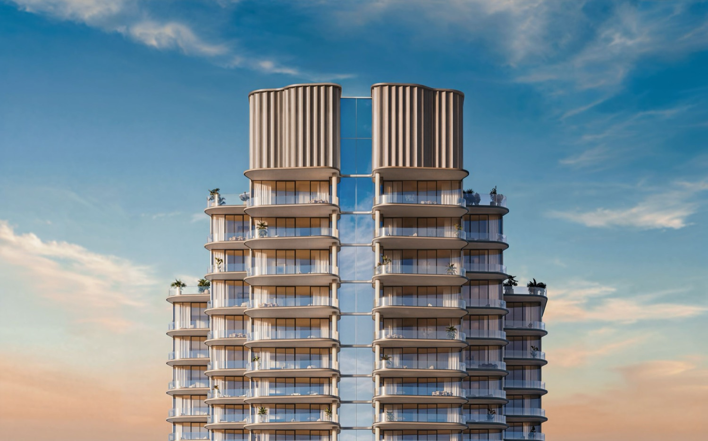
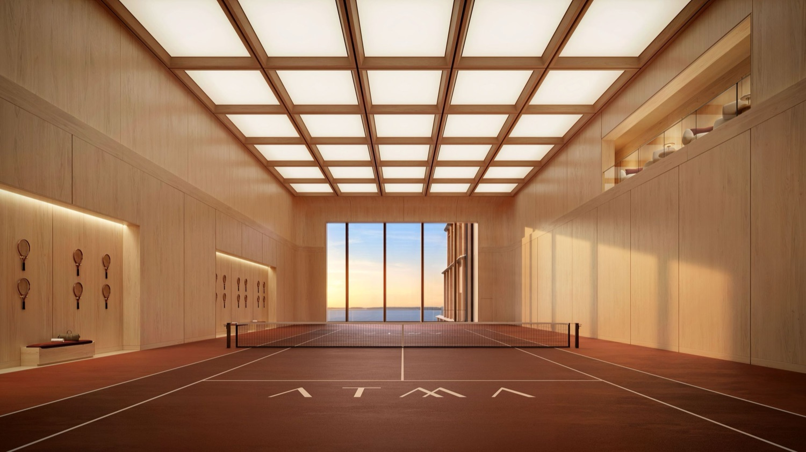
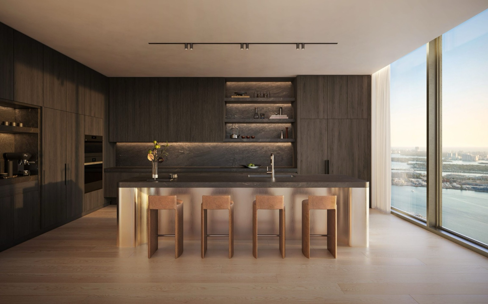
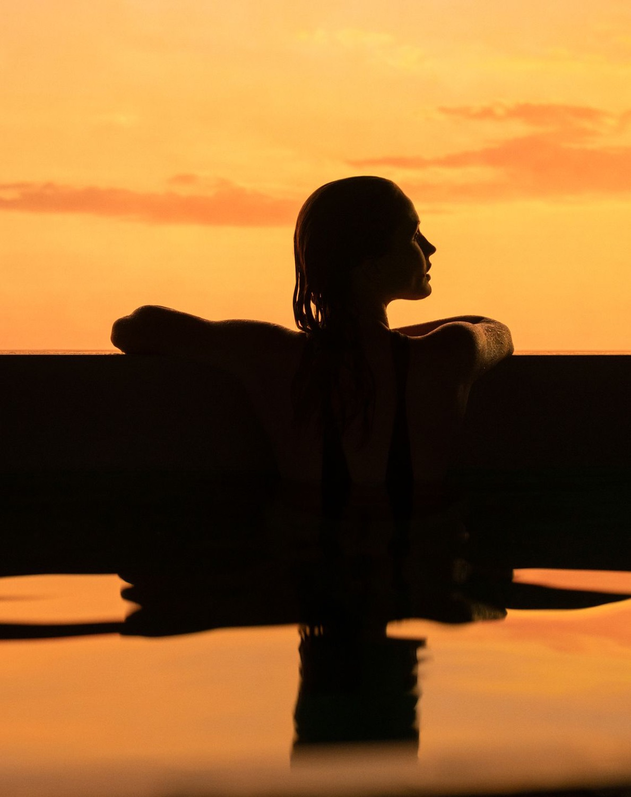

安缦这个名字，38 年来和"安静"绑在一起。隐秘的选址、低声的服务、把客人从人群里捞出来。它的母公司 Aman Group 刚刚宣布的事情，方向几乎相反：11 月 10 日，集团官宣了新品牌 ATMA，梵语里意为"灵魂、真我"，定位是超豪华的 performance living，把运动、康体和长寿做成一门正经生意。
第一次读到新闻时的反应大概是：安缦去做健身房了？往下看会发现，这不是跨界玩票，是集团矩阵里排得上号的第四条线。安缦 36 家酒店与度假村之外，集团手里已经有住宅线 Aman Residences、生活方式线 Janu、生活方式品牌 Aman Essentials 和邮轮品牌 Aman at Sea。ATMA 是第五块，也是口气最大的一块：官方话术叫"酒店业的一次新觉醒"。
01｜德约科维奇不只是代言
ATMA 的 Global Partner 是诺瓦克·德约科维奇，24 座大满贯得主。注意这个头衔的分量：不是拍海报的形象大使，而是 multi-year 合作关系里实打实的产品负责人。他的工作范围写得很具体：主导 ATMA 的 longevity（长寿）、营养、球拍类运动与康体课程体系。
他在官宣里的表述值得抄一遍："我职业生涯学到的是，真正的表现建立在平衡之上，训练、恢复、营养与心理状态协同工作，才能支撑长寿与持续的卓越。"这句话基本就是 ATMA 的产品说明书：不仅给你练，还管你恢复、吃和心理。
对安缦的老客人来说，这件事不陌生也不突兀。安缦的 spa 本来就是行业标杆，Aman New York 的口号之一就是 wellness。ATMA 做的是把 spa 从旅程里的项目，升级成整家店存在的理由。
02｜第一站迈阿密：一座为恢复设计的塔
首店 ATMA Miami 选在 Brickell 金融区的比斯坎湾滨水，通过 Baywalk 直连海滨，带私人码头泊位。建筑由 SHoP Architects 设计，室内出自 Studio Paolo Ferrari，塔楼 1049 英尺（约 320 米），曲线阳台加落地窗，冲着舒适、恢复与康体的方向做设计。

数字都在这里：12 万平方英尺（约 1.1 万平方米）的水疗与康体中心，官方称将跻身迈阿密同类设施中最大之列；世界级的 racquet club，九片球场，含室内 padel、网球与壁球场；六间以营养为主导的餐厅与娱乐空间；此外还有健身房、团体与私教训练工作室、mobility 与 conditioning 实验室、医疗康体中心和专门的恢复空间。

开发商是 OKO Group 与 Oak Row Equities，完工时间定在 2031 年。也就是说，这不是赶热点的一年期项目，是安缦集团愿意等五年的慢生意，这一点倒是很安缦。
03｜卖的不只是房卡
ATMA Miami 的产品结构是三件套：酒店、品牌住宅、私人会员俱乐部。住宅从一居到五居，顶层是六居室 penthouse，业主享安缦集团服务标准，以及私人泳池、健身中心、水疗设施、业主酒廊和共享办公空间。

第三件是 ATMA Club，仅限邀请的全球私人俱乐部，首站就落在迈阿密，业主获得优先提名资格。会员权益指向餐厅、康体、运动与社交空间，包括那个九片球场的 racquet club。酒店、住宅、俱乐部三个产品不是并列关系，是互相导流的闭环，这套打法在今天的超豪华地产里越来越常见，安缦把它做成了标准配置。

04｜怎么看这件事
三条判断。第一，安静不再是稀缺品。安缦起家的隐秘度假村模式被复制了太多轮，而"帮人活得更久"是刚刚开始被 luxury 客群认真付费的东西，医疗康体、恢复科学、营养学都在变成酒店的可量化资产。
第二，这是 Janu 的镜像。Janu 把安缦往年轻与社交方向拉，ATMA 往性能与长寿方向拉，两个第二品牌合起来，覆盖了从活力到衰老的完整人生曲线，安缦本体守在最顶端不动。
第三，看 2031。迈阿密不缺塔楼，缺的是让塔楼里的五公里和一场 padel 值得飞 15 个小时的理由。等 ATMA Miami 开门那天，值得再看一眼：客人到底是为训练飞过去，还是训练只是飞过去的理由。
那么，一次值得专程飞去的旅行，你想要的是彻底的安静，还是一场把自己练到位的出走？留言区聊聊：如果德约科维奇给你排一天的训练与恢复课表，你想从哪一项开始？
事实核对：Aman Group 于 2026 年 11 月 10 日在伦敦官宣新品牌 ATMA，梵语意为"灵魂、真我"，定位超豪华 performance living；德约科维奇（24 座大满贯）任 ATMA Global Partner，主导 longevity、营养、球拍类运动与康体课程体系；首站 ATMA Miami 位于 Brickell 金融区比斯坎湾滨水，经 Baywalk 连接海滨并设私人码头，SHoP Architects 建筑设计、Studio Paolo Ferrari 室内设计，塔楼 1049 英尺；12 万平方英尺水疗与康体中心（官方称迈阿密同类最大之列）、九片球场的 racquet club（含室内 padel、网球、壁球）、六间营养主导餐饮空间、医疗康体中心与恢复空间；品牌住宅一至五居室及六居室顶层 penthouse；仅限邀请的 ATMA Club 首站随迈阿密亮相，业主获优先提名；开发商 OKO Group 与 Oak Row Equities，完工定于 2031 年；Aman Group 现涵盖 36 家安缦酒店与度假村、Aman Residences、Aman Essentials、Janu 与 Aman at Sea。来源：PR Newswire（2026.11.10）、atma.com 官网、HOTELS Magazine。
curiohood · Stay Curious